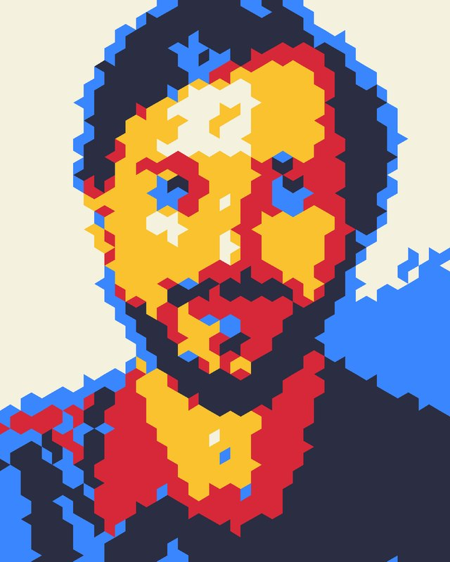
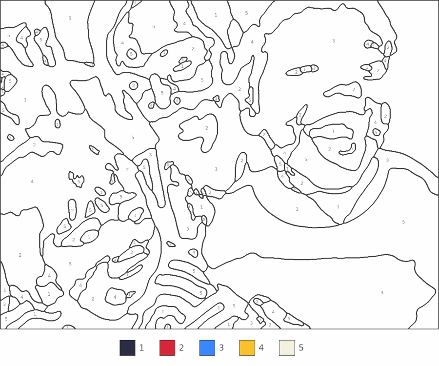
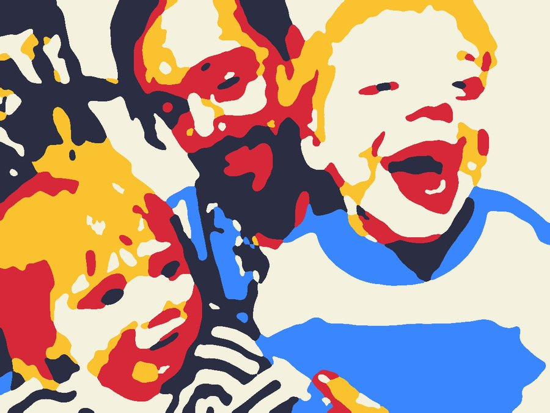
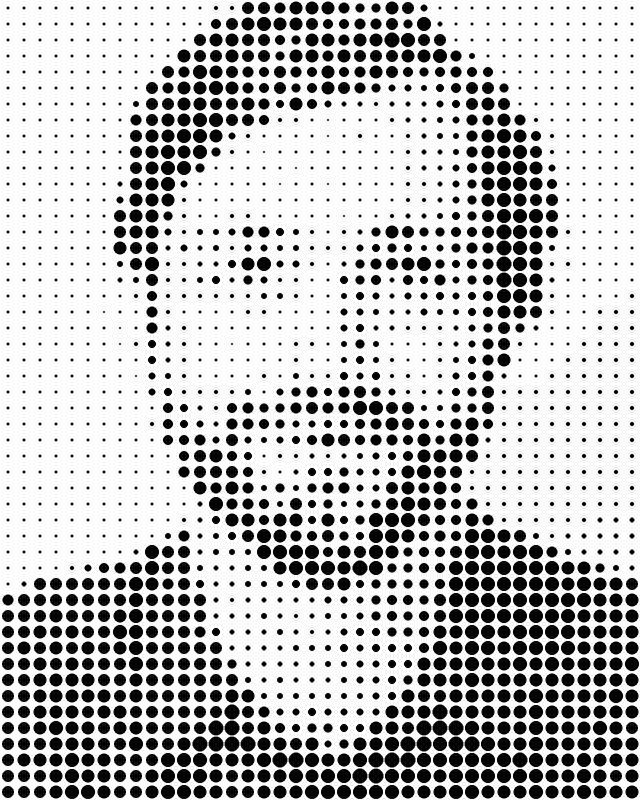
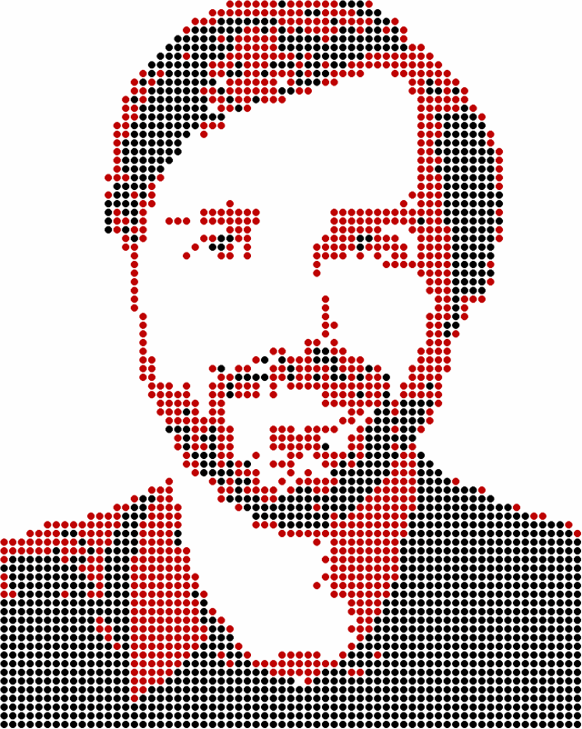

Shape Division Om In Te Kleuren
Je foto als mozaïek van kubussen, zeshoeken, driehoeken of plussen. Kies zelf de kleuren, bijvoorbeeld die van je eigen potloden. Met grote vormen ook goed te doen voor kinderen.
Maak van je eigen foto een kleurplaat. Upload een foto, laat mijn algoritmes het rekenwerk doen, print het resultaat en pak je potloden of stiften erbij.
Leuk om samen met (klein)kinderen te doen, of gewoon voor jezelf, met een kop koffie erbij.


Zo zien de bewerkingen eruit op een portret van mij. Bij vier ervan krijg je ook een lege versie om te printen en zelf in te kleuren.

Je foto als mozaïek van kubussen, zeshoeken, driehoeken of plussen. Kies zelf de kleuren, bijvoorbeeld die van je eigen potloden. Met grote vormen ook goed te doen voor kinderen.
Een echte kleurplaat: je foto in grote vlakken, elk met een nummer. Onderaan staat welke kleur bij welk nummer hoort. Kies zelf hoeveel kleuren, of welke.
Schilderen op nummer, zoals de pakketten uit de winkel: honderden kleine vlakjes in veel kleuren. Meer werk, maar als het af is lijkt het echt op je foto.

Stippen die groter worden waar je foto donkerder is. Print de omtrekjes en kleur ze in: van dichtbij zie je stippen, van een afstand je foto.

Je foto in rode en zwarte stippen, met een grafisch, poster-achtig effect. Niet om in te kleuren, wel om op te hangen.
Een portret of een foto met duidelijke vlakken werkt het best. Je foto wordt alleen gebruikt om je kunsd te maken en wordt niet bewaard.
Print je resultaat en kleur zelf in Met "Zelf Inkleuren" krijg je een lege versie om te printen
Alleen een mooi plaatje